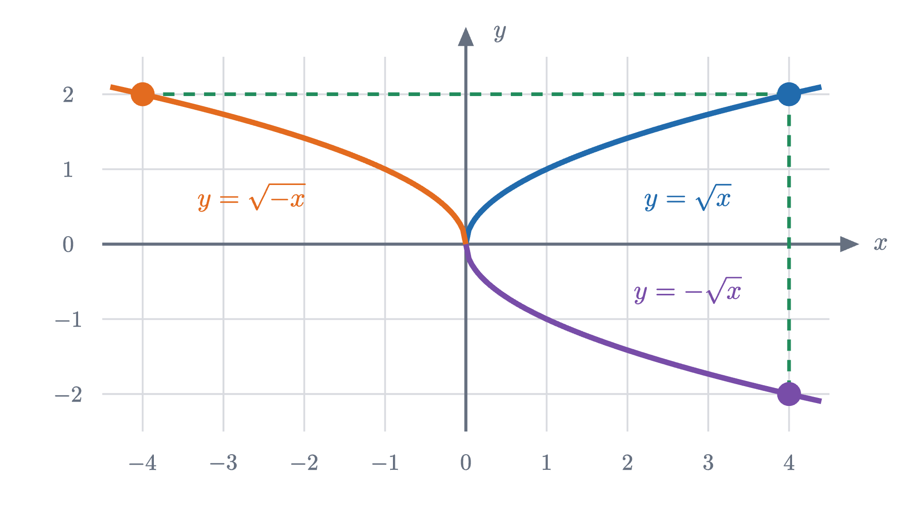
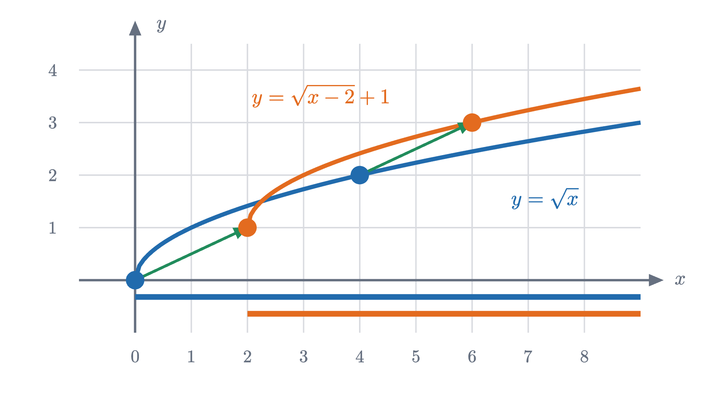

Shifting and stretching graphs: why f(x - 2) moves right
Adding 2 outside a function lifts its graph, but subtracting 2 inside moves it right. A graph is a set of points, and tracking one point explains why.
AssumesWhat slope means, and why y = mx + b is a lineCompleting the square and the quadratic formula
Take the parabola $y = x^2$ and add 2 to the formula, so that it reads $y = x^2 + 2$. Every height goes up by 2 and the graph rises 2 units, as anyone would guess. Now put the 2 inside instead: $y = (x - 2)^2$. Subtracting 2 from $x$ ought to push things toward smaller values of $x$, which is to the left. The graph moves to the right.
This is usually taught as a rule with a warning attached: changes inside the brackets “go the opposite way”. A warning is something you memorize and then get wrong under pressure. We will replace it with a reason, and the reason also settles questions the warning does not reach, such as what $f(2x - 6)$ does to a graph. To get there we first have to say exactly what a function and its graph are, because the explanation consists of taking those two definitions seriously.
A function is a rule, and its graph is the record
The squaring rule accepts a number and returns a number. We name the rule $f$ and write $f(3) = 9$, $f(-2) = 4$, and in general $f(x) = x^2$. The letter $x$ in that last equation is a placeholder for whatever input is supplied, so $f(x - 2)$ means “supply the number $x - 2$ to the rule”, which for squaring gives $(x - 2)^2$.
To see a rule all at once we record what it does. Each input, together with the output it produces, makes a pair of numbers, and a pair of numbers is a point of the plane.
Two features of this picture become the definitions. A rule comes with a stock of inputs it accepts, and for each of them it returns one output, never two. And the graph is the collection of all the (input, output) points.
When a function is given by a formula and no domain is mentioned, the domain is taken to be every real number for which the formula makes sense. So $f(x) = x^2$ has domain all real numbers and range $\{y : y \ge 0\}$, while $\sqrt{x}$ has domain $\{x : x \ge 0\}$, because negative numbers have no real square root.
The definition gives a test for membership that we will use in every proof below: a point $(a, b)$ is on the graph of $f$ exactly when $a$ is in the domain and $b = f(a)$. The phrase “exactly one” matters too. It says that a vertical line through an input $a$ meets the graph in one point if $a \in D$ and in none otherwise.
Pause and try
The circle $x^2 + y^2 = 25$ is a perfectly good curve. Is it the graph of a function? Find two points on it with $x = 3$ before you answer.
Show answerHide answer
With $x = 3$ the equation gives $y^2 = 16$, so $(3, 4)$ and $(3, -4)$ are both on the circle. A function assigns exactly one output to the input 3, so its graph has one point above $x = 3$, and the circle has two. The circle is not the graph of any function. Its upper half, $y = \sqrt{25 - x^2}$ with domain $-5 \le x \le 5$, is.
Changing the output
Now alter the squaring function after it has done its work. Let $g(x) = f(x) + 2 = x^2 + 2$. Each input is treated as before, and then 2 is added to the result:
| $x$ | $-2$ | $-1$ | $0$ | $1$ | $2$ |
|---|---|---|---|---|---|
| $f(x) = x^2$ | 4 | 1 | 0 | 1 | 4 |
| $g(x) = x^2 + 2$ | 6 | 3 | 2 | 3 | 6 |
Every point of the record keeps its input and has its output raised by 2, so the point $(a, b)$ becomes $(a, b + 2)$ and the graph moves straight up.
Multiplying the output behaves just as plainly. For $g(x) = 2f(x)$ the point $(a, b)$ becomes $(a, 2b)$: every point doubles its height above the $x$ axis (or its depth below), and the graph is stretched vertically by a factor of 2. Changes made to the output do to the graph what they say.
Changing the input, one point at a time
Return to the troublesome case, $g(x) = f(x - 2) = (x - 2)^2$. Here the change happens before the squaring. It is worth getting data before theorizing.
Pause and try
Fill in the outputs of $g(x) = (x - 2)^2$ for $x = 0, 1, 2, 3, 4$. At which input is the output smallest? Where was the smallest output of $f(x) = x^2$?
Show answerHide answer
The outputs are $4, 1, 0, 1, 4$. The smallest is $g(2) = 0$. For $f$ the smallest output was $f(0) = 0$. The list $4, 1, 0, 1, 4$ is the list that $f$ produced at the inputs $-2, -1, 0, 1, 2$, so $g$ gives the same outputs as $f$, each at an input that is larger by 2.
The table shows the shift to the right. To see why it must happen, ask how $g$ computes a single value, say $g(3)$. It subtracts 2 from the input, hands the result to $f$, and reports what $f$ says: $g(3) = f(1) = 1$. So the height of the graph of $g$ above the input 3 is copied from the graph of $f$ above the input 1, which is 2 units to the left.
The subtraction acts on the input that $g$ passes to $f$, and it does send that input to the left: from 3 to 1. But the graph of $g$ records its point above 3, where the question was asked, and the height it records came from further left. A point of the graph of $f$ above the input $a$ therefore shows up on the graph of $g$ above the input $a + 2$, because $a + 2$ is the number that turns into $a$ when 2 is subtracted. The formula subtracts; the points have to undo that subtraction, so they add.
Nobody finds this backwards for a delay. If $f(t)$ is the temperature in your town at time $t$ and the same weather reaches the next town 2 hours later, that town’s temperature now is what yours was 2 hours ago, $f(t - 2)$, and its chart is yours moved 2 hours later, to the right.
The shift rule, stated and proved
Here is the statement for shifts in both directions at once, written as a claim about sets of points.
The theorem claims that two sets of points are equal, so the proof has two halves: every moved point is on the graph of $g$, and every point of the graph of $g$ is a moved point. The second half is what guarantees the graph of $g$ contains nothing extra.
The first half is the figure above with letters in place of 3 and 1. The opening example is $h = 2$, $k = 0$: the formula shows $x - 2$, and the points move by $+2$.
Stretching: 2f(x) against f(2x)
Shifts add to coordinates; next we multiply them. The parabola is a poor test subject for this, for a reason given near the end, so we switch to a function with landmarks that are easy to follow. Let
Its graph is an arch that is zero at $x = 0$ and $x = 4$ and has its peak at $(2, 4)$.
Multiplying the output gives $2f(x)$, and we already know what that does: $(a, b)$ becomes $(a, 2b)$, so the zeros stay where they are and the peak rises to $(2, 8)$.
Pause and try
Let $g(x) = f(2x)$, with $f$ the arch. Find the two zeros of $g$ and the input where it peaks. Is the arch wider or narrower than before?
Show answerHide answer
$g(x) = 0$ when $f(2x) = 0$, which needs $2x = 0$ or $2x = 4$, so $x = 0$ or $x = 2$. The peak of $f$ is at the input 2, so $g$ peaks when $2x = 2$, at $x = 1$, with height $g(1) = f(2) = 4$. The arch now spans $[0, 2]$ in place of $[0, 4]$: it is half as wide, and no taller.
The inside change is backwards again, and for the same reason as before. The function $g(x) = f(2x)$ doubles its input before consulting $f$, so the height it records above $x$ is the height of $f$ above $2x$. A point of $f$ above the input $a$ is therefore recorded by $g$ above $a/2$, the number that becomes $a$ when doubled. Doubling in the formula halves the horizontal coordinates of the points.
Shifts and stretches obey one pattern, and it can be stated and proved once.
The proof divides by $p$, which is where $p \ne 0$ is needed, and the condition is not a formality: $g(x) = f(0 \cdot x) = f(0)$ is a constant function, whose graph is a horizontal line built from the single point $(0, f(0))$ of $G$, with the rest of $G$ discarded. Negative values of $p$ and $q$ are allowed, and the proof did not treat them separately. Read the theorem next to the formula for $g$. Outside the function the formula multiplies by $q$ and adds $k$, and the heights of the points are multiplied by $q$ and increased by $k$. Inside, the formula subtracts $h$ and divides by $p$, and the horizontal coordinates are multiplied by $p$ and increased by $h$: the inverse operations, in the reverse order.
Each rule you may have memorized is one choice of the four numbers.
| formula | $(a, b)$ goes to | effect on the graph |
|---|---|---|
| $f(x - h)$ | $(a + h, b)$ | right by $h$ |
| $f(x) + k$ | $(a, b + k)$ | up by $k$ |
| $f(cx)$, $c \neq 0$ | $(a / c, b)$ | horizontal distances divided by $c$ |
| $c\,f(x)$ | $(a, cb)$ | heights multiplied by $c$ |
| $f(-x)$ | $(-a, b)$ | mirrored in the $y$ axis |
| $-f(x)$ | $(a, -b)$ | mirrored in the $x$ axis |
The third row is the theorem with $p = 1/c$, and the last two are $p = -1$ and $q = -1$.


When a shift and a stretch are combined
The theorem earns its keep on a formula like $g(x) = f(2x - 6)$, with $f$ the arch. The tempting reading is “squeeze by a factor of 2 and move right 6”, which would put the arch over the interval from 6 to 8. Before trusting it, find out where the arch lands.
Pause and try
The arch $f$ is zero at the inputs 0 and 4 and peaks at the input 2. For $g(x) = f(2x - 6)$, find the two zeros and the position of the peak.
Show answerHide answer
$g(x) = 0$ when $2x - 6 = 0$ or $2x - 6 = 4$, so at $x = 3$ and $x = 5$. The peak is where $2x - 6 = 2$, at $x = 4$, and its height is $f(2) = 4$. The arch spans $[3, 5]$: half as wide, and moved right by 3, a number that is not visible in the formula.
To apply the theorem, the inside has to be written as $\frac{x - h}{p}$. Factor out the 2: $2x - 6 = 2(x - 3) = \frac{x - 3}{1/2}$. So $p = \frac12$ and $h = 3$, and the point $(a, b)$ goes to $\left(\frac{a}{2} + 3,\ b\right)$: halve the horizontal coordinates, then add 3. This sends $0, 2, 4$ to $3, 4, 5$, in agreement with the direct calculation.
There is a second correct route. Solving $a = 2x - 6$ for $x$ gives $x = \frac{a + 6}{2}$, which says: add 6 first, then halve. So “shift right 6, then squeeze by 2” is right, and “squeeze by 2, then shift right 6” is wrong. A shift made before a squeeze gets squeezed along with everything else, which is how the 6 becomes a 3.
What the rules cannot tell you
The theorem tells you the new graph from the formula. It does not let you run the argument backwards and read a unique formula off a pair of graphs, because different changes can produce the same set of points. For $f(x) = x^2$ we have $f(2x) = 4x^2 = 4f(x)$, so squeezing the parabola horizontally by 2 gives exactly the graph that stretching it vertically by 4 gives. Also $f(-x) = f(x)$ for this $f$, so the mirror image in the $y$ axis is the graph itself and the reflection is invisible. The arch was chosen because its zeros and peak keep these effects apart.
We leaned on one idea throughout: a graph is a set of points, and a point is on the graph of $g$ exactly when its coordinates satisfy $y = g(x)$. Asking where one known point of $f$ must go is enough to rebuild any of the rules above, and it works when the rule has been forgotten. The same idea, applied to the transformation that swaps the two coordinates, produces inverse functions (the last problem), which is how the exponential function gives rise to the logarithm.
Check yourself
The graph of $y = f(x)$ has a peak at $(2, 4)$. Where is the corresponding peak of $y = f(x + 1)$?
Problems
Work these on paper before opening the solutions. The first two repeat the lesson’s moves, the next three combine them or ask for a reason, and the last two go further.
Problem 1
Write a formula for the parabola $y = x^2$ moved 3 units left and 5 units down. Where is its lowest point, and what is its height at $x = 0$?
Show solutionHide solution
Moving 3 left and 5 down is $h = -3$, $k = -5$, so $g(x) = f(x - (-3)) + (-5) = (x + 3)^2 - 5$. The lowest point $(0, 0)$ of $y = x^2$ goes to $(0 - 3, 0 - 5) = (-3, -5)$. At $x = 0$, $g(0) = 9 - 5 = 4$. As a check on the direction, $g(-3) = -5$ is the smallest value, because a square is never negative.
Problem 2
A function $f$ has domain $\{x : -1 \le x \le 3\}$ and range $\{y : 0 \le y \le 5\}$. Find the domain and range of $g(x) = 2f(x - 4) - 1$.
Show solutionHide solution
Here $p = 1$, $h = 4$, $q = 2$, $k = -1$, so $(a, b)$ goes to $(a + 4, 2b - 1)$. The domain of $g$ is $\{a + 4 : -1 \le a \le 3\} = \{x : 3 \le x \le 7\}$. The range is $\{2b - 1 : 0 \le b \le 5\} = \{y : -1 \le y \le 9\}$. Check the domain directly: $g(x)$ is defined when $-1 \le x - 4 \le 3$, that is $3 \le x \le 7$.
Problem 3
Describe how to get the graph of $g(x) = \sqrt{8 - 2x}$ from the graph of $y = \sqrt{x}$. State the domain of $g$ and say where the points $(0, 0)$ and $(4, 2)$ of $y = \sqrt{x}$ go.
Show solutionHide solution
Write the inside as $8 - 2x = -2(x - 4) = \frac{x - 4}{-1/2}$, so $p = -\frac12$ and $h = 4$. The point $(a, b)$ goes to $\left(-\frac{a}{2} + 4,\ b\right)$: halve the horizontal coordinates and mirror them in the $y$ axis, then move right 4. So $(0, 0)$ goes to $(4, 0)$ and $(4, 2)$ goes to $(2, 2)$. The domain is $\left\{-\frac{a}{2} + 4 : a \ge 0\right\} = \{x : x \le 4\}$, and the curve runs from $(4, 0)$ up and to the left. Check: $g(2) = \sqrt{8 - 4} = 2$, and $8 - 2x \ge 0$ exactly when $x \le 4$.
Problem 4
(a) Show that moving the line $y = 3x + 1$ right by 2 gives the same graph as moving it down by 6. (b) Is there a number $k$ such that moving the parabola $y = x^2$ right by 2 is the same as moving it up by $k$?
Show solutionHide solution
(a) With $f(x) = 3x + 1$, $f(x - 2) = 3(x - 2) + 1 = 3x - 5 = f(x) - 6$ for every $x$. The two functions are equal, so their graphs are the same set: on a line of slope 3, a run of 2 to the right is matched by a rise of 6, as in the lesson on slope. (b) No. We would need $(x - 2)^2 = x^2 + k$ for every $x$. At $x = 0$ this says $k = 4$, and at $x = 1$ it says $1 = 1 + k$, so $k = 0$. No single $k$ works. The moved parabola has its lowest point at $(2, 0)$, and a parabola moved vertically has its lowest point on the $y$ axis.
Problem 5
Let $f(t)$ be the temperature in degrees Celsius at a weather station $t$ hours after midnight. Write, in terms of $f$, a formula for each of the following and say what it does to the graph. (a) The same temperatures in degrees Fahrenheit, using $F = 1.8C + 32$. (b) The temperature at a second station where the same weather arrives 3 hours later. (c) The first station’s Celsius temperature as a function of $m$, the number of minutes after midnight.
Show solutionHide solution
(a) $1.8f(t) + 32$: an outside change, so heights are multiplied by 1.8 and then raised by 32. (b) At time $t$ the second station has the weather the first had 3 hours earlier, $f(t - 3)$: the graph moves 3 to the right, later in the day. (c) $m$ minutes is $\frac{m}{60}$ hours, so the function is $f\!\left(\frac{m}{60}\right)$. By the theorem with $p = 60$, each point $(a, b)$ goes to $(60a, b)$: the graph is stretched horizontally by 60. Noon is at $t = 12$ and at $m = 720$: the formula divides by 60 and the graph widens by 60.
Problem 6
Starting from the graph of $f$, carry out two operations on its points: (i) move right 3, then stretch horizontally by 2; (ii) stretch horizontally by 2, then move right 3. Find a formula for the resulting function in each case, and show that the two graphs differ by a horizontal shift. By how much?
Show solutionHide solution
Track the horizontal coordinate $a$ of a point; heights do not change. (i) $a \to a + 3 \to 2(a + 3) = 2a + 6$. That is the theorem’s $pa + h$ with $p = 2$, $h = 6$, so the function is $g_1(x) = f\!\left(\frac{x - 6}{2}\right)$. (ii) $a \to 2a \to 2a + 3$, so $p = 2$, $h = 3$ and $g_2(x) = f\!\left(\frac{x - 3}{2}\right)$. Since $\frac{x - 6}{2} = \frac{(x - 3) - 3}{2}$, we have $g_1(x) = g_2(x - 3)$: the first graph is the second moved 3 further right. The shift made before the stretch was doubled by it. Check with the arch’s zero at 4: route (i) sends it to $2(4 + 3) = 14$, route (ii) to $2 \cdot 4 + 3 = 11$.
Problem 7
For a function $f$ with graph $G$, let $G' = \{(b, a) : (a, b) \in G\}$ be the set obtained by swapping the coordinates of every point. (a) For $f(x) = 2x + 1$, show that $G'$ is the graph of a function and find its formula. (b) For $f(x) = x^2$ with domain all real numbers, show that $G'$ is not the graph of a function. (c) State a condition on $f$ that makes $G'$ the graph of a function.
Show solutionHide solution
(a) A point $(x, y)$ is in $G'$ exactly when $(y, x) \in G$, that is, when $x = 2y + 1$. Solving, $y = \frac{x - 1}{2}$. For each real $x$ there is exactly one such $y$, so $G'$ is the graph of $g(x) = \frac{x - 1}{2}$. Check: $(1, 3) \in G$ and $g(3) = 1$. (b) The points $(2, 4)$ and $(-2, 4)$ are in $G$, so $(4, 2)$ and $(4, -2)$ are in $G'$. Two points with the same first coordinate cannot both lie on the graph of a function. (c) $G'$ is the graph of a function exactly when no two points of $G$ share a second coordinate, which means that different inputs of $f$ always give different outputs. Such an $f$ is called one-to-one, and the function whose graph is $G'$ is its inverse. In (b), restricting the domain of $x^2$ to $x \ge 0$ makes it one-to-one, and the inverse is then $\sqrt{x}$.